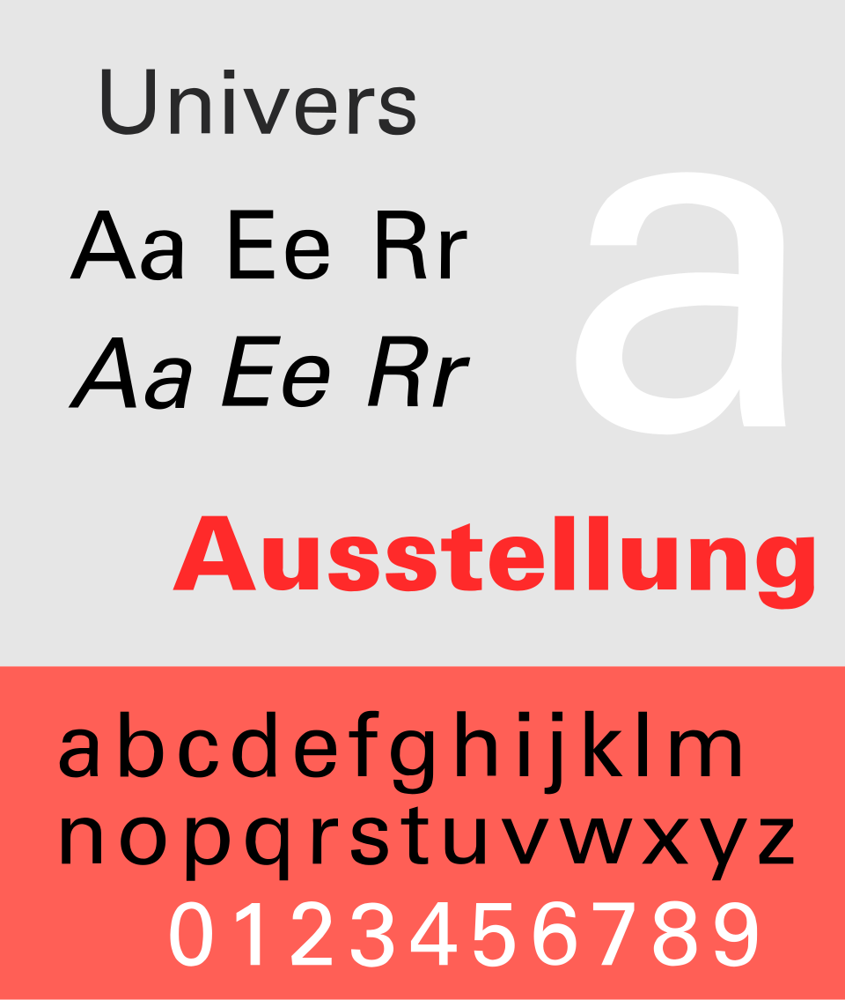

References / Typeface / 64
Univers typeface
Adrian Frutiger’s 1957 grotesque, planned from the start as one matched system of weights and widths.
- Source
- Wikipedia: Univers
- Creator
- Adrian Frutiger, for Deberny & Peignot
- Made
- 1957
- Style
- International Typographic Style (core typeface; agent-proposed, not yet reviewed by a person)
- Moods
- Systematic, neutral, precise, clear
- Evidence
- Inspected and stored the public-domain digital specimen File:Univers Specimen.svg, rendered by Wikimedia at 960 px.
- Reviewed
- Rights
- Open license, stored. License: public domain. Rights policy

Context
Univers was designed by Adrian Frutiger and released by Deberny & Peignot in 1957. It was available from launch in a wide range of weights and widths, and its marketing referred to the periodic table. Wikipedia: Univers.
Wikipedia says the matched range allowed a whole document to be set in one consistent sans-serif, which suited Swiss-style practitioners who wanted neutral type. The design was planned for phototypesetting but also cast in metal. Wikipedia.
Emil Ruder devoted the January 1961 issue of Typographische Monatsblätter to Univers, according to its Commons file description. See Typographie.

Observed
- Stroke ends are cut horizontally, and curves thin slightly where they join stems, for example in the n and the a.
- The large white a has a straight, vertical stem and a bowl that meets it with a visible taper.
- The italic is an oblique form of the roman, not a separate cursive design.
- The bold “Ausstellung” in red keeps the same proportions as the regular letters.
Why it belongs
Univers makes the style’s systematic thinking visible inside the type family itself: weights and widths are coordinates in a grid, not separate faces with their own characters.
Borrow
Define type styles as a numbered system (weight × width) and use only the cells you need. It keeps hierarchy consistent across a long document.
Related: Frutiger’s later humanist design, Frutiger.
Measured
Machine-extracted by tools/image-traits.py on . Full measurement.
- Mean chroma
- 0.22
- Palette
- #e6e6e6 56%
- #ff5f56 27%
- #ffffff 5%
- #010101 3%
- #ff2a2a 2%
- #252526 1%
- #fc7670 1%
- #210f0e 1%

